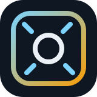
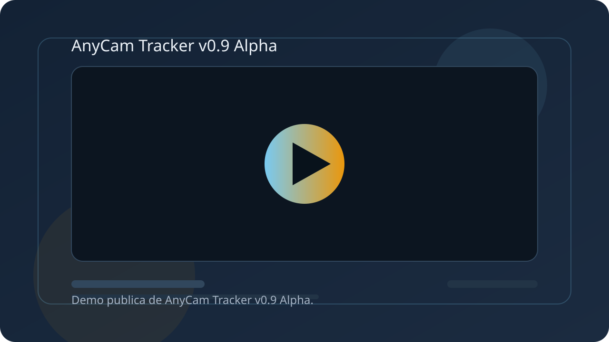

Autoencuadre digital
Mantiene el sujeto mejor en cuadro sin mover fisicamente la camara.

v0.9 Alpha
AnyCam no te vende otra camara. Mejora la que ya tienes.
Autoencuadre digital y zoom por gestos para webcams, camaras USB y streams RTSP. Todo funciona en local y sin suscripcion.

Demo
La demo publica mostrara webcam local/USB, selector de fuente, autoencuadre digital y zoom por gestos.
Funciones
Mantiene el sujeto mejor en cuadro sin mover fisicamente la camara.
Aproximacion por gestos con la mano. Ya funciona en la alfa y seguira recibiendo ajuste fino.
La experiencia esta pensada para operarse cerca del equipo, sin depender de una nube.
Soporte implementado en v0.9 Alpha para camaras locales y camaras USB compatibles con Windows.
Ruta validada para fuentes de video de red en la alfa.
Integracion prevista alrededor de flujos de captura de ventana para creadores y estudios pequenos.
Edicion Founder
29 €
Pago unico. Sin suscripcion. Licencia de por vida.
La licencia Founder esta asociada a tu cuenta. Puedes usar AnyCam en tus propios equipos iniciando sesion con tu email y contrasena.
Contenido monetizado permitido. Redistribucion, reventa, sublicencia, bundle, SaaS, OEM o marca blanca requieren acuerdo previo por escrito.
Compatibilidad
Hoja de ruta
FAQ
AnyCam Tracker esta pensado para mejorar camaras normales mediante software. En la alfa actual soporta webcam local/USB y streams RTSP. La compatibilidad se ampliara progresivamente.
No necesariamente. La idea de AnyCam es anadir autoencuadre digital y control por software a camaras que ya tienes, siempre que la fuente sea compatible.
No. AnyCam usa encuadre digital, recorte y zoom por software. No mueve motores ni hace PTZ fisico.
Si. Puedes usar AnyCam para crear, grabar, emitir y monetizar contenido propio.
La Edicion Founder es de pago unico y licencia de por vida. No tiene renovacion anual.
No sin acuerdo previo por escrito. La redistribucion, reventa, sublicencia, bundle, OEM, SaaS o marca blanca requieren autorizacion expresa.
No. Esta es una version alfa.